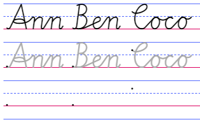
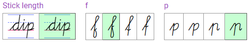

About the Cogncur Worksheet Creator
The Worksheet Creator is a web application that lets you create handwriting worksheets using the cursive font Cogncur.
The application allows you to place text on guidelines. It can also automatically copy text, using different styles such as gray or outline for tracing, or even showing just the starting points of words, aligned exactly underneath the example text.

click to open the Worksheet Creator
Creating a new worksheet
When you first open the Worksheet Creator, you are shown a gallery of sections. You can click the section you want to add to your worksheet and immediately customize it and add/change text. After you Confirm, the section will appear on your worksheet.
The Cogncur font

Some of the buttons that allow you to customize the font.
The worksheet creator has a 'Configuration' section that allows you to customize the font. You can switch between font styles as well as enable or disable all OpenType features available within the fonts. Among other options, you can:
- Choose the slant of the font.
- Toggle entry strokes from the baseline on or off.
- Choose between different letter variants.
Paper size
The 'Configuration' section above your worksheet allows you to choose your paper size (letter or A4) and paper orientation (landscape or portrait).
Line colors
The 'Configuration' section allows you to choose a set of line colors that will be used whenever you place guidelines on your paper. You can also choose to give the area between the baseline and the waist line a background color. Only the line colors are set from the global 'Configuration' section above your worksheet. You can also choose to disable guidelines, or to disable specific helper lines, but this is done within each content section that you place on your worksheet.
Sections and fields
A worksheet can have multiple content sections. This is not required; a single section can be interesting and powerful enough to fill an entire worksheet. Every section has a type. The section type determines what happens with the text you input.
Saving and printing
Warning: when you leave the web page, you lose the contents of your worksheet. You also lose the contents if you refresh the page with F5.
You can print your worksheet or download it as a PDF (through functionality provided by your web browser or operating system).
More information on downloading and printing.